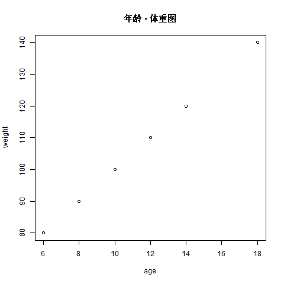

Chapter 3 Introduction
尽快掌握数据探索的基本工具是探究语言的第一要义。数据探索的目标是生成许多有前途的潜在信息，便于以后更深入地探索它们。

data-science-explore
- 可视化是 R 编程的重要部分：制作优雅且信息丰富的绘图，以帮助理解数据。学习 ggplot2 绘图的基本结构，将数据转换为绘图。
- 在数据转换中，使用关键谓词允许我们选择重要变量、筛选出关键观察结果、创建新变量和计算摘要。
- 建模是探索过程的重要组成部分，但这并不是当下能够弄清的，它会在以后的学习中逐渐深入。
在工作流中：“基础知识”、“工作流：脚本” 和 “工作流：项目”，你将学习编写和组织 R 代码的良好实践。
以下为附加内容，因为已知资料上貌似没有提到。
3.1 基本数据形式和函数
3.1.1 向量、矩阵与列表
创建已知或未知的空向量用于存储一系列数据（如整数、小数、字符串）。
x <- vector() # 创建空向量
y <- c(1, 2) # 手动赋值
# 在 R 中，我们可以使用 “:” 来创建序列填充
z <- c(1:3) # 这里其实等价于 1, 2, 3矩阵有点像我们学的表格，这种数据结构很类似于其它语言中的二维数组。注意使用 t() 可以行列互换。
Matrix_transpose
rownames <- c("row1", "row2", "row3", "row4")
colnames <- c("col1", "col2", "col3")
m <- matrix(
data = c(3:14), #
nrow = 4, # 设置行数。如果不知道数据有多少其实可以不设置
ncol = 3, # 设置列宽
byrow = TRUE, # 设置为 TRUE 即按行排列，反之则按列排
dimnames = list(rownames, colnames) # 设置行和列的标题，默认为 NULL
)
m
#> col1 col2 col3
#> row1 3 4 5
#> row2 6 7 8
#> row3 9 10 11
#> row4 12 13 14
t(m)
#> row1 row2 row3 row4
#> col1 3 6 9 12
#> col2 4 7 10 13
#> col3 5 8 11 14列表使用 list() 创建。一个列表里可以随意放置向量里能放置的所有元素，甚至是一个向量、一个矩阵。
list_data <- list(
"google",
matrix(c(1, 2, 3, 4, 5, 6), nrow = 2),
123.1,
c(1:5)
)
# 读取元素
list_data[[1]] # 注意中括号应该用两层来获取对应元素。但如果只用一层，R 会自动识别并修正
names(list_data) <- c("Sites", "Numbers", "Lists") # 使用 names() 来赋值名称
list_data$Sites # 有名称后可以用 $xx 来读取对应的列元素
# 添加 / 更新元素
list_data[5] <- "新元素"
# 删除元素
list_data[4] <- NULL
# 合并 / 转换列表
num_list <- list(1, 2)
merged_list <- c(num_list, list_data) # 合并
unlist(num_list) # 转换列表为向量3.1.2 基本函数
数据集如下：
age <- c(10, 12, 14, 6, 8, 18)
weight <- c(100, 110, 120, 80, 90, 140)数学中一些常用的计算函数
5 %% 3 # 求余数
#> [1] 2
5 %/% 3 # 求模
#> [1] 1
mean(age) # 求平均值
#> [1] 11.33333
sd(age) # 求标准差
#> [1] 4.320494
cor(age, weight) # 求相关度，数值在 -1 到 1，其中 1 是绝对正相关，0 是完全不相关，-1 是绝对负相关
#> [1] 1
lm(age ~ weight) # 求两者构成的回归直线斜率（注意波浪号连接）
#>
#> Call:
#> lm(formula = age ~ weight)
#>
#> Coefficients:
#> (Intercept) weight
#> -10.0 0.23.2 学习 R 自带的画图功能
在 R 里画图非常简单。以上面的 age 和 weight 为例：
# 注意在 R 里面，相对路径的基层路径是由工作区设定的
getwd() # 获取当前工作区路径
setwd("D:/Project/R-Project/") # 设置工作区路径
png("./source/mygraph.png") # 设置好后就可以存储到理想位置
plot(age, weight) # 绘制散点图
abline(lm(age ~ weight)) # 绘制回归直线
title("年龄 - 体重图") # 添加 # 添加标题
dev.off() # 结束画图并保存实际运行生成的图：

mygraph
3.3 更高级的数据形式
dataframe 是一系列向量数据的集合：
data.frame(
a = c(1:3),
b = c(6:8)
)
#> a b
#> 1 1 6
#> 2 2 7
#> 3 3 8tibble 与 dataframe 非常相似，甚至是使用 dataframe 储存的。tibble 是 tidyverse 系列的专用数据集格式。它的优点是干净、方便数据处理。
library(tidyverse)
#> -- Attaching packages ------------------------------------------------- tidyverse 1.3.1 --
#> v ggplot2 3.3.5 v purrr 0.3.4
#> v tibble 3.1.6 v dplyr 1.0.8
#> v tidyr 1.2.0 v stringr 1.4.0
#> v readr 2.1.2 v forcats 0.5.1
#> -- Conflicts ---------------------------------------------------- tidyverse_conflicts() --
#> x dplyr::filter() masks stats::filter()
#> x dplyr::lag() masks stats::lag()
tribble(
~sex, ~response,
"male", 1,
"female", 2,
"male", 1
)
#> # A tibble: 3 x 2
#> sex response
#> <chr> <dbl>
#> 1 male 1
#> 2 female 2
#> 3 male 1